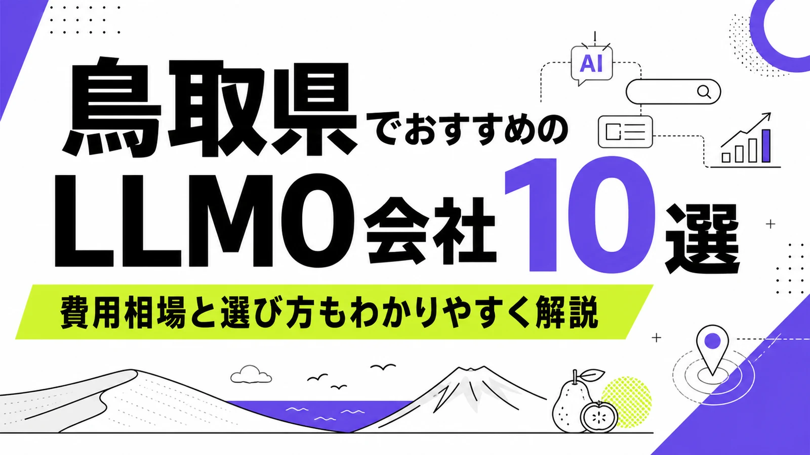
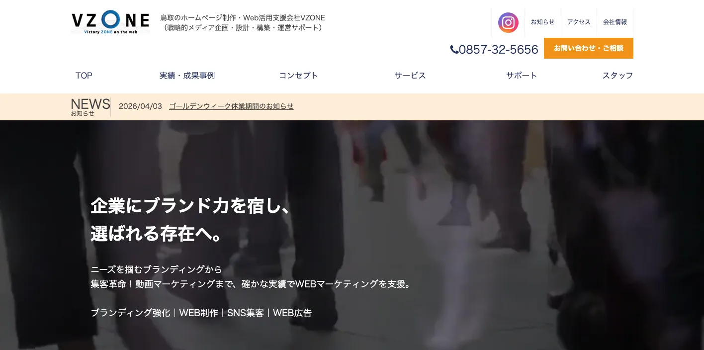
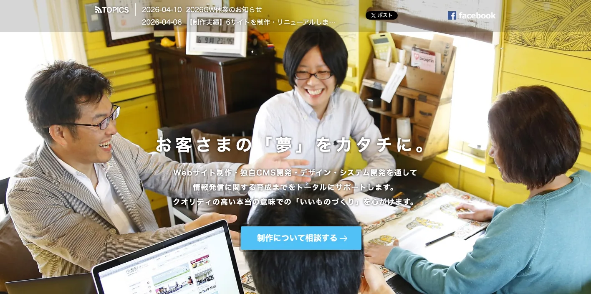
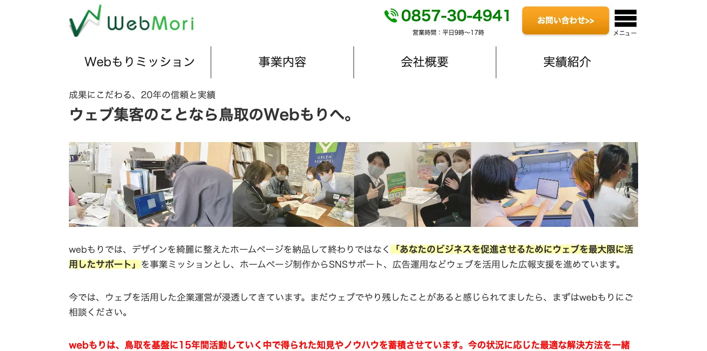
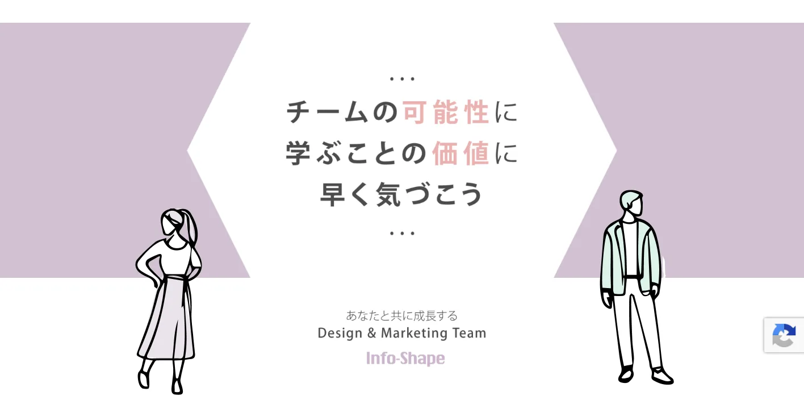
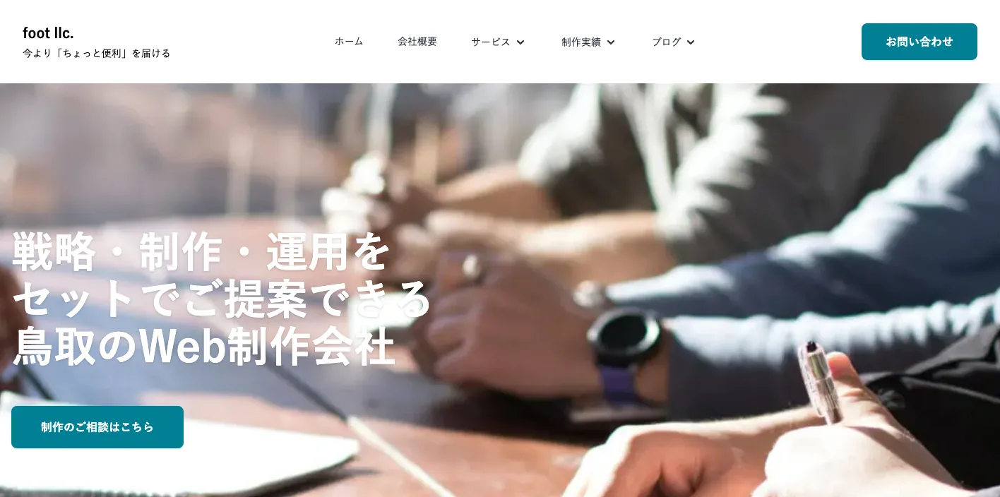
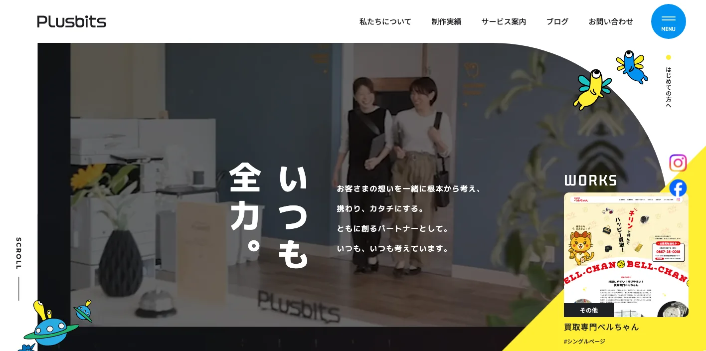
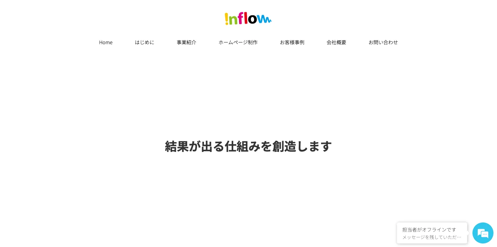
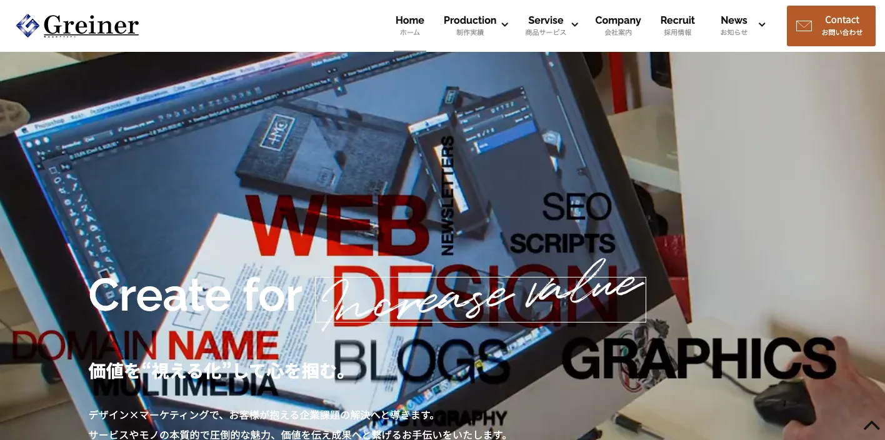
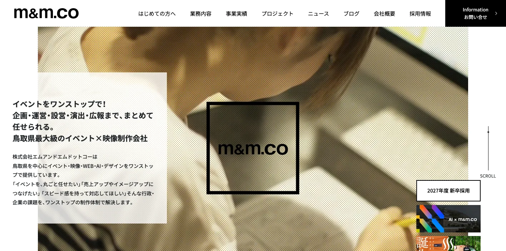

鳥取県でおすすめのLLMO会社10選｜費用相場と選び方もわかりやすく解説

鳥取県でLLMO会社を選ぶときは、「鳥取のホームページ制作会社」だけで探すと判断が荒くなります。鳥取市は行政、医療、教育、士業、鳥取砂丘周辺の観光が重なり、米子市・境港市は山陰広域、港湾、水産、医療、商業、大山・皆生温泉の文脈が強くなります。倉吉市・三朝町・湯梨浜町はまち歩きと温泉、食品や電子部品などの製造業はBtoBの技術情報が重要です。
鳥取県の推計人口では、令和8年3月1日現在の総人口が522,021人、総世帯数が221,914世帯と公表されています。さらに令和6年観光客入込動態調査では、観光入込客数が実人数9,830千人、延べ人数19,825千人とされています。人口規模に対して観光接点が大きいため、鳥取県のLLMOは地元客向けと県外観光客向けの質問を分ける必要があります。
この記事では、鳥取県でLLMOに取り組むときに比較したい会社、選び方、費用相場をまとめます。基礎から確認したい方はLLMO対策の基礎記事、近隣商圏も比較したい方は和歌山県の比較記事、兵庫県の比較記事、奈良県の比較記事も参考にしてください。
目次

鳥取県でおすすめのLLMO会社10選
今回は、鳥取県内に拠点や強い対応実績があり、Web制作、SEO、SNS、Web広告、広報、採用、観光PR、EC、動画、システム、LLMOなどの公開情報を確認しやすい会社を中心に選びました。鳥取県内でLLMO専業を前面に出す会社はまだ多くありません。そのため、AIに引用されやすい情報設計、FAQ、構造化データ、SEO、取材、更新運用まで広げて支援できるかを見ています。
鳥取県では、鳥取市の行政・医療・教育・鳥取砂丘周辺、米子市・境港市の山陰広域商圏と港湾・水産、大山・三朝・倉吉の観光、食品や電子部品などの製造業で、AIに聞かれる質問が変わります。まずは下の表で、自社の地域と目的に近い会社を絞ってください。
| 会社名 | 拠点・対応 | 向いている相談 |
|---|---|---|
| VZONE（株式会社日本海プラザ） | 鳥取市 | ブランディング、Web制作、SNS、Web広告、運用改善、採用支援 |
| 有限会社ジャプロ | 西伯郡伯耆町 | Web制作、独自CMS、通販サイト、システム、観光/行政実績 |
| 株式会社Webもり | 鳥取市 | ホームページ制作、SEO、SNS、広告、地域メディア運営 |
| 株式会社Info-Shape | 鳥取市 | デザイン、SNS/Webマーケティング、広報、採用、EC/Shopify |
| 合同会社フット | 鳥取市 | 戦略・制作・運用、Web制作、ブランディング、チャットボット |
| 株式会社プラスビッツ | 鳥取市 | Web制作、グラフィック、保守サポート、公共/医療/企業実績 |
| 株式会社インフロー | 鳥取市 | Webプロデュース、広告代理、Webプロモーション、集客販売支援 |
| 株式会社グライナー | 鳥取市 | Web制作、映像、写真、音楽、EC、システム、マーケティング |
| 株式会社M&M.CO | 鳥取市 | イベント、映像、Web、AI、デザイン、行政/企業プロモーション |
| 株式会社LiKG | 全国対応 | LLMOコンサルティング、SEO連動、AI検索露出調査、記事制作 |
株式会社AIMAは鳥取県内の会社ではありませんが、全国対応でLLMO支援を提供しています。月額5万円のLLMO支援は初期費用なし・1ヶ月単位で始められ、質問設計、記事制作、引用チェックに絞って実務を進められます。鳥取市、米子市、境港市、倉吉市、三朝町、大山町、琴浦町のように商圏が分かれる場合も、まず無料LLMO診断で優先順位を確認できます。
VZONE（株式会社日本海プラザ）

VZONE（株式会社日本海プラザ）は、鳥取市を拠点に、ブランディング、Web制作、SNS集客、Web広告、運営サポートを行うWeb活用支援会社です。公式サイトでは、中小企業、ベンチャー、官公庁まで幅広い業種を支援し、戦略的メディア企画・設計・構築・運営サポートを掲げています。
LLMOでは、会社や商品の存在価値をAIが理解しやすい形に言語化することが重要です。VZONEはブランディングと運用改善を含めた支援を打ち出しているため、鳥取市周辺の中小企業、工務店、美容、医療、採用サイト、地域ブランドの情報整理に向いています。
有限会社ジャプロ

有限会社ジャプロは、西伯郡伯耆町を拠点に、Webサイト制作、通販サイト制作、独自CMS開発、システム開発、スタンプラリーイベント制作などを行う会社です。公式サイトでは、Webサイト制作実績総数600サイト以上を掲げ、行政、観光、企業、通販、イベント企画の実績を紹介しています。
鳥取県西部では、大山、皆生温泉、境港、米子、伯耆町など、観光と生活商圏が重なります。ジャプロは観光や行政、医療、地域施設の実績も見えるため、広域観光、地域イベント、施設サイト、ECやCMSを含む情報発信を整えたい事業者に向いています。
株式会社Webもり

株式会社Webもりは、鳥取市を拠点にホームページ制作、SNS運用サポート、広告運用、SEO対策などを行うWeb制作会社です。公式サイトでは、鳥取県庁、鳥取大学、大山乳業など、公的機関から地域サービス業までの取引例を紹介しています。
LLMOでは、検索だけでなく、SNS、Googleビジネスプロフィール、公式LINE、ブログなど複数の情報源を整える必要があります。Webもりは地域の情報発信やWeb広報に強いため、鳥取市周辺の店舗、団体、学校、地域事業者が、複数チャネルの情報をそろえたいときに候補になります。
株式会社Info-Shape

株式会社Info-Shapeは、鳥取市に拠点を置くデザイン、SNS/Webマーケティング、コンサルティング会社です。公式サイトでは、Web制作、Web広告、パンフレット、ロゴ、ブランディング、広報、採用、EC、Shopify構築サポートなどを案内しています。
鳥取県では、観光、飲食、地場産品、採用、ECのように、写真やSNSとWebを一体で動かす必要がある業種が多くあります。Info-Shapeはデザイン、SNS、マーケティング、ECを横断しているため、梨、かに、乳製品、加工食品、観光関連など、商品の世界観をAIにも人にも伝えたい事業者に向いています。
合同会社フット

合同会社フットは、鳥取市津ノ井を拠点に、ホームページ制作、グラフィックデザイン、チャットボット、運用コンサルティングを提供するWeb制作会社です。公式サイトでは、戦略・制作・運用を一体で考え、Webサイトの企画、マーケティング、ブランディング、デザイン、システム開発を事業内容に掲げています。
LLMOでは、サイト公開後にFAQや事例を更新し、AIに拾われる一次情報を増やし続けることが重要です。フットは制作後の運用やWebサービス活用も相談しやすいため、小規模企業、個人事業、地域店舗、団体が無理なく情報発信を続けたい場合に合います。
株式会社プラスビッツ

株式会社プラスビッツは、鳥取市松並町にあるホームページ制作会社です。公式サイトでは、Webサイト制作、グラフィックデザイン、保守サポートを提供し、公共・行政・団体、医療・福祉、製造・販売などの制作実績を紹介しています。
鳥取県のLLMOでは、ユーザーに分かりやすいWebデザインと、AIが読み取りやすい構造の両方が必要です。プラスビッツはWebとデザイン、保守のバランスが取りやすいため、鳥取市周辺の企業、医療福祉、団体、製造販売業が、公式サイトをきちんと整えたいときに向いています。
株式会社インフロー

株式会社インフローは、鳥取市賀露町を拠点に、Webプロデュース、Web制作・リニューアル、広告代理、Webプロモーション、集客販売支援を行う会社です。公式サイトでは、制作後からがビジネスのスタートと位置づけ、集客までワンストップで対応できることを打ち出しています。
LLMOは記事制作だけで終わらせると成果が見えにくくなります。インフローは広告や販促を含めた集客支援を掲げているため、鳥取市・米子市の店舗、住宅、不動産、サービス業、採用広報で、問い合わせや予約まで追いたい企業に向いています。
株式会社グライナー

株式会社グライナーは、鳥取市安長を拠点に、ホームページ制作、映像編集、写真、音楽、システム開発、EC、マーケティングを扱う会社です。公式サイトでは、価値を見える化し、商品やサービスの魅力を伝えて成果につなげる制作を掲げています。
鳥取県では、観光、宿泊、食品、採用、地域イベントのように、文章だけでなく動画や写真が効くテーマが多くあります。グライナーは映像や写真をWebに活かしやすいため、大山、鳥取砂丘、三朝温泉、境港、地域商品のPR、採用動画を含むLLMO設計で候補になります。
株式会社M&M.CO

株式会社M&M.COは、鳥取市商栄町を拠点に、イベント、映像、Web、AI、デザインをワンストップで提供する制作会社です。公式サイトでは、鳥取県最大級のイベント×映像制作会社として、行政・企業のイベント企画、映像制作、Webデザイン、各種デザイン制作を案内しています。
観光地や自治体、地域イベント、採用広報では、公式サイトだけでなく、イベントページ、映像、SNS、パンフレット、特設サイトをまとめて設計する必要があります。M&M.COはイベントと映像を含めて支援できるため、鳥取県内のプロモーション、観光キャンペーン、採用ブランディングに向いています。
株式会社LiKG

株式会社LiKGは、全国対応のLLMOコンサルティング会社です。公式サイトでは、LLMO診断、LLMO×SEOコンサルティング、EEAT強化記事制作を提供し、AI検索での露出状況調査や構造化データなどの改善支援を案内しています。
鳥取県内の取材、写真、地域文脈の整理は地元会社に依頼し、AI検索での見え方、質問設計、記事構成、引用状況の確認はLLMO専門会社に依頼する分担も有効です。観光、食品、医療、BtoB製造業のように、県外からも検索されるテーマでは、全国対応の専門会社を比較に入れる価値があります。
鳥取県のLLMO会社を比較する際のポイント
ここでは、会社一覧とは別に、鳥取県でLLMO会社を選ぶときの見方を整理します。ポイントは、鳥取県を「人口が少ない地方」とだけ見ないことです。鳥取市、米子・境港、倉吉・中部、大山・三朝・砂丘観光、食品・電子部品製造では、AIに聞かれる質問が違います。
鳥取市は行政・医療・教育・生活サービスを分ける
鳥取市は県庁所在地として、行政、医療、教育、士業、住宅、店舗、観光が集まります。AIに聞かれる質問も「鳥取市でおすすめ」だけでなく、「駐車場があるか」「子ども連れで使えるか」「採用しているか」「補助金に詳しいか」「公共案件の実績があるか」のように細かく分かれます。
この地域では、会社概要、サービス、料金、実績、FAQ、採用情報を整理できる制作会社が合います。サイトの見た目だけでなく、検索される質問に合わせてページを分けられるかを確認してください。
たとえば同じ「鳥取市でおすすめ」と聞かれても、観光客は砂丘周辺の移動や食事を知りたい一方、地元住民は駐車場、予約、料金、診療時間、相談しやすさを知りたがります。企業向けでは、補助金、採用、公共団体との取引実績、県内外への対応可否が判断材料になります。LLMO会社には、誰がAIに質問するのかを分けて、ページやFAQを整理できるかを確認しましょう。
米子・境港は山陰広域、港湾、水産、医療の質問を拾う
米子市、境港市、西伯郡周辺は、鳥取県西部だけでなく島根県東部とも商圏が重なります。境港の水産、米子の医療・商業、皆生温泉、大山観光、港湾物流など、県境をまたいだ比較質問が出やすい地域です。
この地域では「鳥取県内」だけでなく、「山陰で」「米子・松江から」「境港周辺で」といった表現を整理する必要があります。LLMO会社には、地名、交通、対応エリア、取扱商品、配送、法人対応を正しく出し分けられるかを見ましょう。近隣の広域比較では、次回以降に公開予定の島根県記事も重要になります。
特に境港や米子では、かに、鮮魚、食品加工、物流、宿泊、医療、商業施設が近い距離にあります。AIは「境港で買えるもの」「米子から行きやすい観光」「大山と境港を一日で回れるか」のように、複数地域をまたいだ回答を作ります。地域名を単独で並べるだけでなく、移動順、所要時間、周辺施設との関係まで公式情報として出すことが重要です。
倉吉・中部はまち歩き、温泉、地元店舗の一次情報を整える
倉吉市、三朝町、湯梨浜町、琴浦町、北栄町などの中部エリアでは、白壁土蔵群、三朝温泉、はわい温泉、東郷湖、青山剛昌ふるさと館など、まち歩きと観光、地元店舗、宿泊が組み合わさります。AIは「所要時間」「駐車場」「雨の日」「日帰り」「周辺で食べる場所」「子ども連れ」をよく扱います。
観光事業者は、施設紹介だけでなく、周辺の移動時間、予約、季節、モデルコース、写真、よくある質問を公式サイトに出す必要があります。地元店舗は、営業時間、支払い方法、予約、混雑、近隣観光との組み合わせを整えるとAIに拾われやすくなります。
鳥取砂丘・大山・温泉地は天候と移動条件をページ化する
鳥取砂丘、大山、三朝温泉、皆生温泉、浦富海岸などは、天候や季節で体験が変わります。AIには「雨でも行けるか」「冬でも行けるか」「服装」「車がない場合」「大阪から何時間か」「家族連れ」「外国人対応」といった質問が入りやすいです。
この領域のLLMOでは、アクセス、所要時間、季節別の注意点、周辺施設、予約条件、キャンセル、外国語対応、写真、動画を整えることが重要です。制作会社を選ぶときは、観光パンフレットをそのままWeb化するのではなく、AIに聞かれる質問へ直せるかを見てください。
食品・電子部品・紙関連の製造業は技術情報を公開する
鳥取県の経済センサス製造業詳細版では、製造品出荷額の品目別構成で食料品、電子部品・デバイス、パルプ・紙が大きいことが示されています。BtoBのLLMOでは、会社名を知ってもらうだけでなく、「どの加工に対応できるか」「どの素材を扱えるか」「品質管理はどうか」をAIが説明できるようにする必要があります。
製造業では、設備一覧、加工範囲、対応素材、検査体制、納期、事例、技術相談の流れをページ化してください。営業資料にだけある情報をWebに出すことで、AIが比較回答に使える材料が増えます。
また、BtoB企業は「地域名＋業種」だけでは見つかりにくいことがあります。AIに拾わせたいなら、製品名、技術名、対応素材、検査機器、認証、相談事例、量産可否、小ロット対応、県外取引の可否まで具体的に書く必要があります。鳥取県外の発注者がAIで候補企業を探す場面も想定し、専門用語と初心者向け説明の両方を用意してください。
鳥取県のLLMO会社に依頼する費用相場
鳥取県でLLMOを依頼する費用は、診断だけなのか、記事制作まで頼むのか、サイト制作や撮影まで含めるのかで変わります。観光、食品、医療、BtoB製造、採用など、必要な一次情報の量によって金額が変わりやすいです。
無料〜10万円：診断、簡易調査、優先順位づけ
最初は、AIに自社名やサービス名を聞いたときにどう出るか、競合がどう紹介されるか、公式サイトの情報が足りているかを確認します。鳥取市や米子市の店舗、士業、クリニックなら、Googleマップ、公式サイト、口コミ、FAQの整合性を見るだけでも改善点が出ます。
この段階では、記事を大量に増やす必要はありません。どの質問でAIに出たいかを決め、会社概要、サービス、料金、実績、よくある質問のどこが弱いかを確認します。AIMAの無料LLMO診断のような入口を使うと、優先順位を決めやすくなります。
鳥取県で見積もりを見るときは、単純な記事本数よりも「どの地域の質問をどこまで扱うか」を先に確認してください。鳥取市だけなら生活サービスや採用のFAQが中心になりやすく、米子・境港なら山陰広域、港湾、水産、医療、宿泊の説明が増えます。大山、三朝、倉吉、鳥取砂丘では写真、アクセス、季節情報、モデルコースまで必要になり、同じLLMO対策でも作業量が変わります。
月5万〜15万円：既存ページ改善、FAQ、記事制作
月5万〜15万円の範囲では、既存ページの改善、FAQ追加、コラム制作、内部リンク、構造化データの見直し、簡単な競合調査が中心になります。鳥取県内の小規模店舗、宿泊施設、食品EC、医療福祉、士業なら、まずこの価格帯から始めるケースが現実的です。
安く始める場合でも、記事だけを納品して終わる会社は避けたほうが安全です。鳥取県では、地名、観光地名、商品名、季節、交通条件の組み合わせが多いため、記事とサービスページ、商品ページ、アクセス情報をつなげる設計が必要です。
月15万〜30万円：SEO、MEO、LLMO、広告、分析をまとめて改善
月15万〜30万円になると、SEO、MEO、LLMO、広告、アクセス解析、競合調査、コンテンツ改善を一体で進めやすくなります。鳥取市・米子市の複数拠点、観光施設、採用に困っている会社、BtoB製造業では、この価格帯のほうが進めやすいことがあります。
この段階では、AI回答だけでなく、問い合わせ、予約、資料請求、採用応募、EC売上、マップ経由の来店まで見ます。鳥取県は県内移動と県外流入の両方を見ないと成果が読みづらいため、対応エリアやアクセス情報も含めて改善します。
30万円〜数百万円：サイト制作、撮影、動画、EC、多言語まで含む場合
ホームページを作り直す、写真撮影や動画制作を入れる、ECを作る、予約システムを入れる、観光情報を多言語化する場合は、初期費用が30万円から数百万円になることがあります。鳥取砂丘、大山、境港、温泉地、食品EC、製造業の採用サイトではこの規模になりやすいです。
費用が大きい場合は、見積もりを「ページ数」だけで見ないでください。必要なのは、AIに引用される一次情報です。写真、実績、料金、FAQ、モデルコース、配送条件、加工範囲、採用情報など、どの情報を新しく作るのかを確認しましょう。
特に観光や食品ECでは、撮影、取材、商品登録、予約導線、配送条件、外国語対応を別費用にしている会社もあります。製造業では、設備撮影、技術ヒアリング、図表作成、事例整理に時間がかかります。総額だけで比較せず、AIに見せたい一次情報を作る費用と、公開後に更新する費用を分けて確認すると失敗しにくくなります。
鳥取県のLLMO会社に関するよくある質問
鳥取県内の会社に依頼したほうがいいですか？
対面取材、写真撮影、観光や地元企業の文脈整理が必要なら県内会社は強いです。一方で、AI検索でどう引用されるかの診断、FAQ設計、構造化データ、記事改善は県外のLLMO専門会社を組み合わせても問題ありません。
鳥取市と米子市ではLLMOの進め方は変わりますか？
変わります。鳥取市は行政、医療、教育、士業、鳥取砂丘周辺の観光が強く、米子市・境港市は山陰広域、港湾、食品、医療、宿泊、島根方面との比較が増えます。地域ごとにAIに聞かれる言葉を分ける必要があります。
観光業でもLLMOは必要ですか？
必要です。鳥取砂丘、大山、三朝温泉、皆生温泉、境港、浦富海岸などでは、行き方、所要時間、季節、天候、家族連れ、外国人対応、周辺観光をAIに聞かれやすいです。公式サイトに最新の一次情報を整理すると、AI回答に使われやすくなります。
食品や農水産品にもLLMOは使えますか？
使えます。梨、かに、牛乳、和牛、水産品、加工食品では、産地、旬、保存方法、食べ方、ギフト、EC、事業者情報を整理すると、AIが比較回答を作る材料になります。商品ページだけでなく、FAQや作り手の紹介も重要です。
製造業やBtoB企業にも効果がありますか？
あります。鳥取県は食料品、電子部品・デバイス、パルプ・紙などの製造業があり、設備、加工範囲、素材、品質管理、納期、事例をWebに出すことで、AIが対応できる会社を説明しやすくなります。
MEO対策とLLMO対策は何が違いますか？
MEOはGoogleマップで見つけてもらう対策です。LLMOはChatGPTやAI Overviewなどの回答で、自社情報を正しく引用・参照してもらう対策です。店舗、宿泊、クリニック、士業では、MEOとLLMOを同時に整えるのが効率的です。
鳥取県のLLMO対策の費用はどれくらいですか？
小さく始めるなら月5万〜15万円、本格的な改善なら月15万〜30万円以上が目安です。サイト制作、写真撮影、動画、EC、多言語、予約システム、採用ページまで含めると、初期費用が数十万円から数百万円になることもあります。
最初に何を相談すればいいですか？
まず「AIに何と聞かれたときに出たいか」を10個書き出してください。鳥取市の生活サービス、米子の医療、境港の水産、大山の観光、倉吉のまち歩き、製造業の技術相談など、地域と質問をセットで整理すると必要なページが見えます。
鳥取県でLLMO会社を選ぶなら、東部・中部・西部の質問を分けましょう
鳥取県でLLMO会社を選ぶときは、鳥取市の生活商圏、倉吉・三朝の中部観光、米子・境港の山陰広域商圏、鳥取砂丘・大山・温泉地の観光、食品・電子部品・紙関連の製造業を同じ言葉でまとめないことが重要です。AIは、地域名、目的、条件、一次情報が具体的なほど回答を作りやすくなります。
まずは、自社がAIに聞かれたい質問を10個書き出してください。次に、その質問に答える公式ページ、FAQ、実績、料金、会社概要、写真、アクセス、配送、予約、採用情報があるかを確認します。足りない情報が多ければWeb制作や取材に強い会社、既存サイトがあるならSEO/LLMO改善に強い会社を選ぶのが現実的です。
鳥取県内の会社だけで完結する必要はありません。地域取材や撮影は地元会社、LLMO診断や記事改善は専門会社という分担もできます。小さく始めたい場合は、AIMAのLLMO支援サービスや無料診断も使い、どの質問から対策すべきかを先に整理してください。